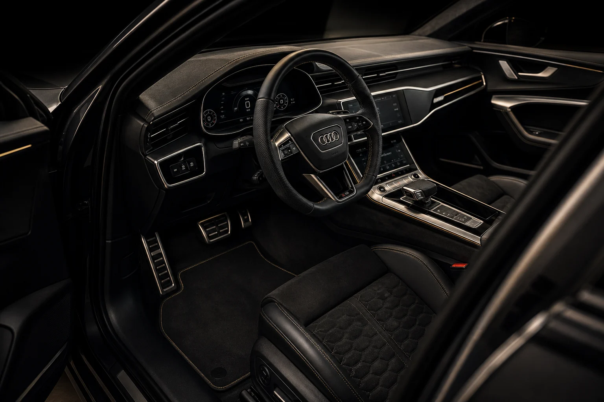

HUISDIERHAREN • INTERIEUR • KOFFERRUIMTE
Hondenhaar verwijderen uit je auto
Hondenhaar in de auto is hardnekkig, vooral in stoffen bekleding, tapijt, matten en de kofferbak. PRIME Detailing helpt in Zwolle en omgeving met gerichte verwijdering van huisdierharen als onderdeel van een interieurreiniging.
- Service
- Op locatie
- Regio
- Zwolle
- Vanaf
- €69

Waarom hondenhaar extra tijd kost
Hondenharen hechten zich aan vezels en kruipen in naden, tapijt en hoeken van de kofferbak. Een gewone stofzuiger haalt vaak alleen het losse haar weg, terwijl de rest zichtbaar blijft zodra het licht erop valt.
Daarom wordt huisdierhaar vooraf apart beoordeeld. De toeslag hangt af van de hoeveelheid haar, het type bekleding en hoeveel zones aangepakt moeten worden.
Plekken die meestal aandacht vragen
- Kofferbakvloer en zijpanelen.
- Achterbank, hoofdsteunen en naden.
- Vloermatten en tapijt rond de achterbank.
- Stoffen deurpanelen of bekleding waar haren in blijven hangen.
- Kieren waar haar en zand zich verzamelen.
Combineer met een passend pakket
Hondenhaar verwijderen werkt het beste wanneer de rest van het interieur ook wordt meegenomen. Vaak past PRIME Deep Clean goed, omdat stoelen, vloer, matten, kofferbak en kunststof dan samen worden aangepakt.
Bij extreem veel haar of sterke vervuiling kan PRIME Rescue nodig zijn. Je krijgt vooraf duidelijkheid op basis van foto’s, zodat er geen verrassingen ontstaan.
Prijs en pakketadvies
Huisdierharen hebben een toeslag van +€25-50, afhankelijk van de hoeveelheid haar en benodigde tijd. Bij extreme vervuiling geldt prijs op maat.
FAQ
Veelgestelde vragen.
Wat kost hondenhaar verwijderen uit een auto?
De toeslag voor huisdierharen is +€25-50 bovenop het gekozen pakket. Bij extreme vervuiling kan een maatwerkprijs nodig zijn.
Moet ik foto’s sturen?
Ja, graag. Foto’s van de achterbank, kofferbak, matten en bekleding helpen om de hoeveelheid haar goed in te schatten.
Wordt ook de kofferbak meegenomen?
Ja, wanneer de kofferbak onderdeel is van het gekozen pakket of de afgesproken behandeling.
Kan dit mobiel in Zwolle?
Ja. PRIME Detailing werkt op locatie in Zwolle en omgeving, na praktische afstemming vooraf.
KLAAR VOOR EEN FRISSER INTERIEUR?
Stuur foto's van je auto.
Wij adviseren het juiste pakket.
Deel duidelijke foto's, je locatie in of rond Zwolle en de service die je zoekt. PRIME Detailing reageert met passend advies.